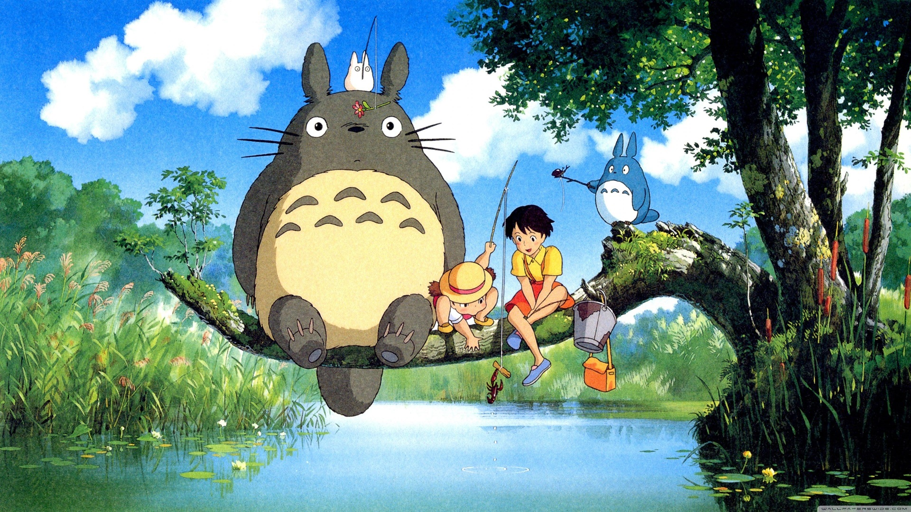
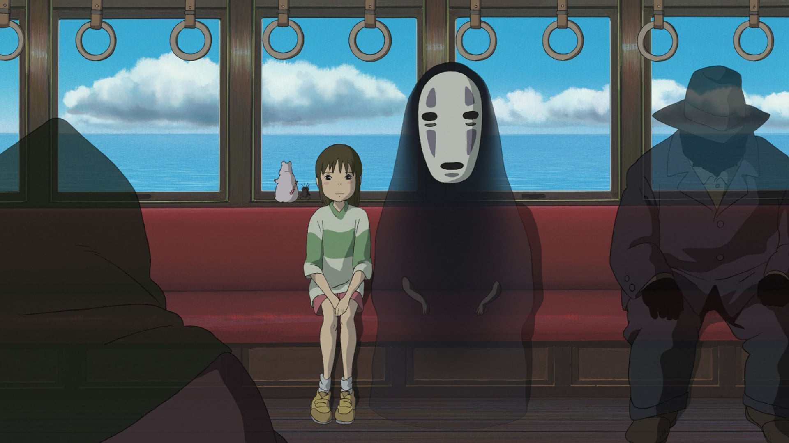
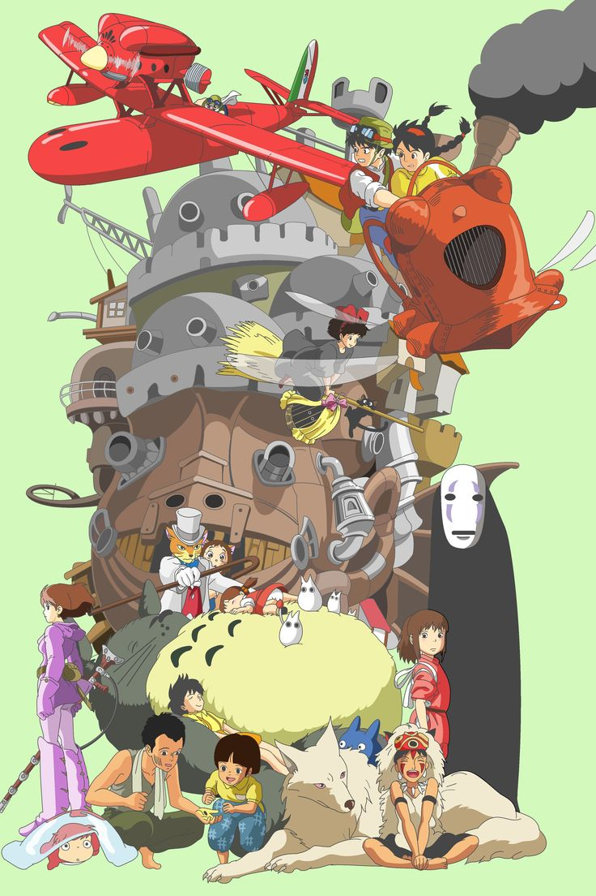

Peliculas
El viaje de Chihiro
El viaje de Chihiro es una aclamada película de animación japonesa de 2001, escrita y dirigida por Hayao Miyazaki. Narra la historia de Chihiro, una niña caprichosa y algo temerosa de 10 años que, durante una mudanza, entra por accidente a un mundo mágico gobernado por dioses y espíritus
La princesa Mononoke
La princesa Mononoke (cuyo nombre real es San) es la protagonista de la obra maestra de 1997 dirigida por Hayao Miyazaki y producida por Studio Ghibli. Criada por la diosa loba Moro, es una feroz guerrera que lucha para salvar el bosque y a los dioses de la naturaleza de la destrucción humana
Mi vecino Totoro
Mi vecino Totoro es una icónica película de animación japonesa de 1988 creada por Hayao Miyazaki para Studio Ghibli. Narra la historia de dos hermanas, Satsuki y Mei, quienes se mudan al campo en 1958 para estar cerca de su madre hospitalizada. Allí descubren que el bosque cercano está habitado por amigables espíritus mágicos llamados Totoros
El castillo ambulante
El castillo ambulante (Howl's Moving Castle) es una historia de fantasía que sigue a Sophie, una joven convertida en anciana por una bruja. Para romper el hechizo, busca refugio en el castillo mágico del excéntrico mago Howl. Juntos viven una gran aventura que explora el amor, la libertad y la autoaceptación
La tumba de las luciérnagas
"La tumba de las luciérnagas" es un desgarrador drama ambientado en 1945 en Kōbe (Japón), durante la Segunda Guerra Mundial. Narra la trágica lucha por la supervivencia de Seita (14 años) y su hermana pequeña Setsuko (4 años), quienes quedan huérfanos y deben enfrentarse a la incomprensión, el hambre y la devastación extrema
El castillo en el cielo
El castillo en el cielo (también llamada Laputa: El castillo en el cielo) es la primera película oficial de animación del Studio Ghibli, estrenada en 1986. Fue escrita y dirigida por Hayao Miyazaki, producida por Isao Takahata y musicalizada por Joe Hisaishi. La historia sigue a los jóvenes huérfanos Sheeta y Pazu en su búsqueda de una legendaria isla flotante.
Nausicaä del Valle del Viento
Nausicaä es la joven princesa del Valle del Viento, una valiente exploradora y una pacifista empática que busca la armonía entre la humanidad y la naturaleza. Creada por Hayao Miyazaki en su famoso manga de 1982 y adaptada al cine en la película de 1984, es un icono providencial de la ciencia ficción ecológica.
Kiki, la aprendiz de bruja
El póster original japonés de Kiki, la aprendiz de bruja (Majo no Takkyūbin), estrenada en 1989 por Studio Ghibli, es una de las piezas más icónicas del anime. Fue diseñado por el propio director, Hayao Miyazaki, y destaca por su estilo pictórico y minimalista.
Susurros del corazón
Una joven estudiante amante de los libros descubre que todos los libros que ha elegido en la biblioteca han sido elegidos anteriormente por la misma persona. Así conoce a Seiji, un joven que está aprendiendo a fabricar violines.
El cuento de la princesa Kaguya
Encontrada dentro de un brillante tallo de bambú por un viejo cortador de bambú y su esposa, una niña diminuta se convierte rápidamente en una hermosa joven que cautiva a todos los que la conocen, pero debe enfrentar su destino.
fundadores

Hayao Miyazaki
Hayao Miyazaki (宮崎 駿 Miyazaki Hayao?, Bunkyō, Tokio; 5 de enero de 1941) es un director de cine de animación, animador, ilustrador, empresario, mangaka y productor de anime japonés, de renombre internacional y con una carrera de cinco décadas. Junto con Isao Takahata fundó Studio Ghibli, un estudio de películas y animación. Es comparado por muchos con Walt Disney, Steven Spielberg u Orson Welles.

Isao Takahata
Isao Takahata (高畑 勲 Takahata Isao?) (Ise, 29 de octubre de 1935-Tokio, 5 de abril de 2018) fue un director, productor y guionista de películas y series de animación japonesa. Fundó, junto con su amigo Hayao Miyazaki, los estudios Ghibli. Sus obras más reconocidas fueron las series para televisión Heidi, la niña de los Alpes (1974) y Marco (1976), y los largometrajes La tumba de las luciérnagas (1988), Recuerdos del ayer (1991) y El cuento de la princesa Kaguya (2013), a la postre su última película, que fue nominada a un Óscar en la categoría de mejor película de animación en los 87.º

Toshio Suzuki
Toshio Suzuki (鈴木敏夫 Suzuki Toshio?, 19 de agosto de 1948) es un productor de películas de anime y colega de Hayao Miyazaki, así como expresidente de Studio Ghibli. Es reconocido como uno de los productores más exitosos de Japón tras el enorme éxito de taquilla de las películas de Studio Ghibli.

Yasuyoshi Tokuma
Yasuyoshi Tokuma (徳間康快) (1921–2000) fue un pacifista, editor y productor japonés, nacido en la prefectura de Kanagawa. Es famoso por fundar la editorial Tokuma Shoten en 1954 y por ser uno de los cofundadores clave del Studio Ghibli. Él dio el apoyo financiero y la libertad creativa necesarios para crear obras maestras de la animación.
Datos Curiosos
| # | Dato | Descripción |
|---|---|---|
| 1 | Primera película | Nausicaä del Valle del Viento (1984) fue el proyecto que dio origen al estudio. Aunque se estrenó antes de su fundación oficial, su éxito permitió que Hayao Miyazaki y su equipo crearan Studio Ghibli. |
| 2 | Premio Oscar | El viaje de Chihiro (2001) ganó el Premio Oscar a Mejor Película Animada en 2003, convirtiéndose en una de las películas más reconocidas de la historia del anime a nivel mundial. |
| 3 | Estilo de animación | A diferencia de muchos estudios modernos, Ghibli mantiene una fuerte tradición de animación dibujada a mano, cuidando cada detalle para lograr escenas visualmente únicas y llenas de vida. |
| 4 | Personaje icónico | Totoro, de Mi vecino Totoro, es la mascota oficial del estudio y uno de los personajes más reconocibles de la animación japonesa. Representa la magia, la naturaleza y la infancia. |
| 5 | Temáticas profundas | Las películas del estudio exploran temas complejos como el respeto por la naturaleza, el impacto de la guerra, el crecimiento personal y la importancia de la imaginación. |
| 6 | Detalles realistas | En muchas películas, se pone especial atención a pequeños detalles cotidianos (comer, caminar, cocinar), lo que hace que las historias se sientan más reales y cercanas al espectador. |
| 7 | Música inolvidable | Muchas bandas sonoras de Ghibli han sido compuestas por Joe Hisaishi, cuyas melodías han sido clave para transmitir emociones profundas en las películas. |
| 8 | Impacto mundial | Studio Ghibli ha influenciado a animadores, directores y artistas de todo el mundo, convirtiéndose en un referente de calidad, creatividad y narrativa dentro del cine. |
Extras
1:Noche en el Valle de las Brujas (Majo no Tani no Yoru): Un cortometraje dirigido por Goro Miyazaki y Akihiko Yamashita que se estrenó el 8 de julio de 2026.
2: Exclusividad en parque temático: Este nuevo corto se proyecta únicamente en el Cinema Orion, ubicado en el almacén del Ghibli Park en Japón, con un acceso muy limitado por sesión.
3: Hayao Miyazaki: La directiva del estudio confirmó que el legendario director sigue ideando y trabajando en conceptos para nuevos filmes a pesar de su avanzada edad y tras el éxito de El niño y la garza.
1: Problemas de sucesión: El estudio enfrenta el reto de hallar reemplazos generacionales que igualen la dirección artística de figuras históricas como Hayao Miyazaki e Isao Takahata.
2:Transición y legado: Expertos y seguidores apuntan a que Studio Ghibli podría orientarse parcialmente hacia la administración de sus propiedades intelectuales, exposiciones especiales como "Zen y Ghibli" en Kioto, y proyectos de conservación de su enorme legado clásico en lugar de mantener un ritmo constante de largometrajes comerciales.